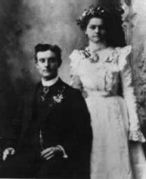

ANNA CHRISTINA HEDER (1885- 1954)
  Anna Christina Heder, was born 19 October 1885 in Huntsville, Utah.
Anna Christina Heder, was born 19 October 1885 in Huntsville, Utah.
Anna married George Francis Sevey in the Salt Lake City Temple on 9 October 1900. A week later Anna became so ill that her life was despaired of, however she did recover. They left for Mexico on the 11th of December. Anna and George Frances had 11 children together.
She died 16 February 1954, in Mesa Arizona.